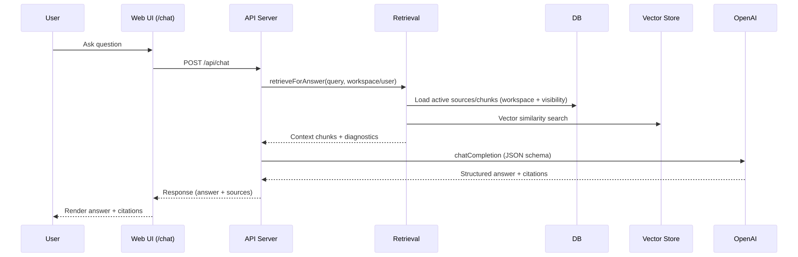

Key components: Web UI, Express API, Retrieval (vector + lexical fallback + neighbor expansion), Job Runner/Worker (sync + ingest), DB schema (sources/sourceVersions/chunks/jobs), Observability (Prometheus + traces/spans), OpenAI (GPT‑4o + embeddings). [Evidence: README.md, server/index.ts, server/routes_v2.ts, server/lib/retrieval.ts, server/lib/vectorstore.ts, server/lib/jobs/runner.ts, shared/schema.ts, server/lib/openai.ts, server/lib/observability/prometheus.ts]

The `/api/chat` route is a thin adapter over agent core and persists messages + citations. [Evidence: server/routes_v2.ts, shared/schema.ts]

Embeddings use `text-embedding-3-small`, chat uses `gpt-4o`, and vectors can be persisted in `chunks.vectorRef`. [Evidence: server/lib/openai.ts, server/lib/vectorstore.ts, shared/schema.ts]
Impact: Not evidenced in repo.
The repo defines measurement infrastructure (eval runners, metrics schemas, CI regression gate) but does not state real-world adoption or outcome metrics. [Evidence: README.md, shared/schema.ts, eval/golden/runner.ts]
Not evidenced in repo (no contribution attribution in code/documents). Use these as grounded talking points about shipped decisions:
Expected signals (examples): server logs request timing for `/api/*`; voice server logs “WebSocket server listening on /ws/voice”; job runner logs pending/claimed jobs. [Evidence: server/index.ts, server/lib/voice/websocket.ts, server/lib/jobs/runner.ts]
| Claim | Evidence (file paths) |
|---|---|
| Repo is FieldCopilot: “field operations AI assistant” with React + TS frontend and Express + TS backend | README.md, server/index.ts, client/src/App.tsx |
| Chat API exists and uses a fast-path for trivial prompts; persists conversations/messages | server/routes_v2.ts, shared/schema.ts |
| RAG retrieval enforces workspace boundaries + visibility, does vector search and lexical fallback | server/lib/retrieval.ts, server/lib/vectorstore.ts, shared/schema.ts |
| Embeddings + chat model are OpenAI-based (text-embedding-3-small, gpt-4o) | server/lib/openai.ts, README.md |
| Jobs support retries/backoff, concurrency locks, and rate limiting | server/lib/jobs/runner.ts, shared/schema.ts |
| Connector sync handler supports Google, Atlassian, Slack; OAuth tokens are decrypted before use | server/lib/jobs/handlers/syncHandler.ts, server/lib/oauth.ts, shared/schema.ts |
| Observability endpoints and Prometheus metrics exist | server/routes_v2.ts, server/lib/observability/prometheus.ts, docs/enterprise_readme.md |
| Evaluation runners exist; golden runner writes reports and tracks groundedness/hallucinations | eval/runner.ts, eval/golden/runner.ts, README.md |
| Impact is not claimed as real-world results in repo; measurement plan is derived from existing metric/eval hooks | README.md, shared/schema.ts, eval/golden/runner.ts, server/lib/observability/prometheus.ts |